« La nature à l'état pur »
Pays : Burkina Faso
Statut : Région administrative
Provinces : 2 (Comoé, Léraba)
Départements : 17
Chef-lieu : Banfora
Gouverneur : Patrice Yéyé.é
Population (2024) : 945 000 hab.
Densité : 50 hab./km²
Ethnies principales : Gouin, Turka, Karaboro, Sénoufo
Coordonnées : 10°15'N, 4°30'O
Superficie : 18 917 km²
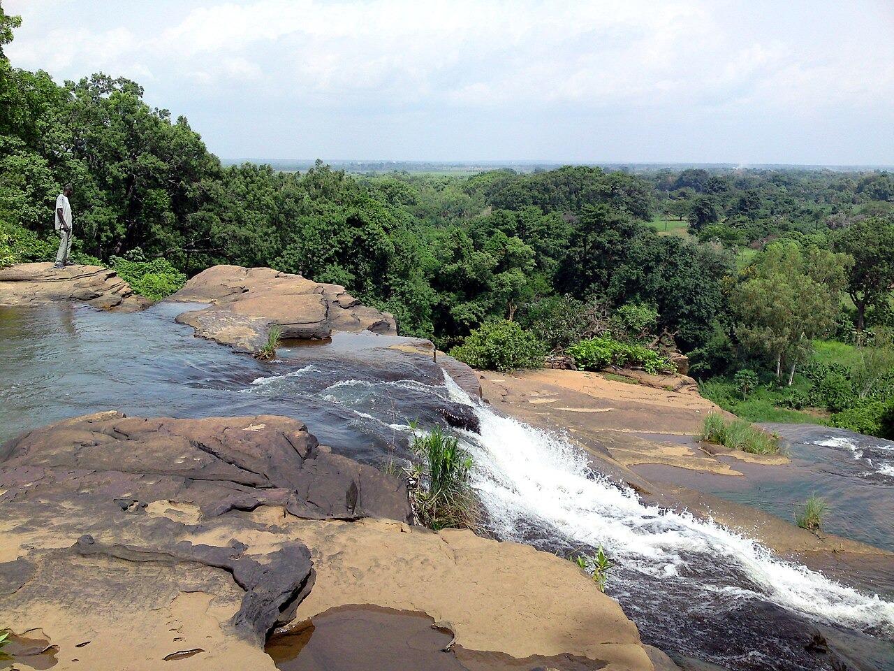
Présentation
Jusqu’au 2 juillet 2025, la région porte l’appellation de Cascades. Dans le cadre d’une réforme administrative nationale visant à promouvoir des toponymes endogènes, elle adopte officiellement le nom de Tannounyan.
Le terme Tannounyan signifie « collines » ou « falaises » dans les langues turka et gouin. Cette désignation renvoie directement aux formations rocheuses emblématiques de la région, telles que les dômes de Fabédougou, les pics de Sindou, le mont Ténakourou, ainsi que le piton de Bérégadougou.
Située à l'extrême sud-ouest, la région de Tannounyan est la plus arrosée du pays. Elle abrite les célèbres cascades de Banfora, les dômes de Fabédougou et le lac de Tengréla avec ses hippopotames paisibles. C'est un véritable sanctuaire pour les amoureux de la nature sauvage.
Aujourd'hui, la région capitalise sur ses cascades majestueuses, son artisanat d'art et sa vie culturelle dynamique. Elle célèbre la richesse de son patrimoine à travers divers festivals communautaires et des manifestations annuelles telles que la fête de la moisson à Banfora, faisant de cette entité territoriale une destination incontournable d'Afrique de l'Ouest.
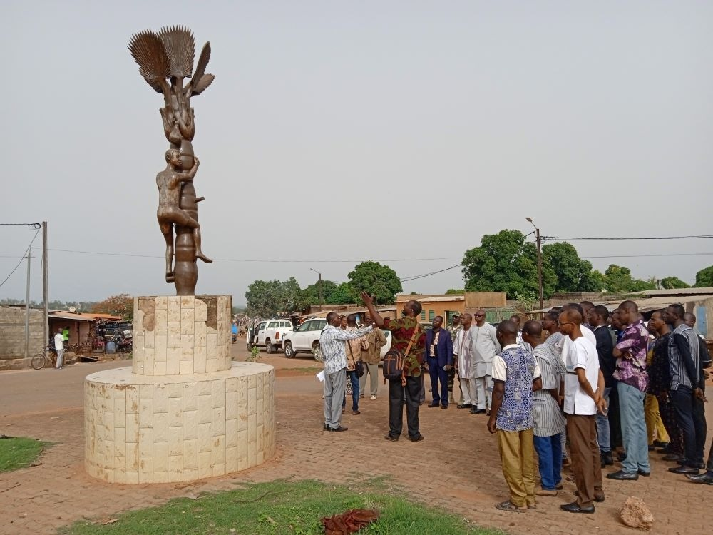
Tradition du peuple de Banfora
La tradition des communautés de Banfora au Burkina Faso est un agencement harmonieux d'influences ancestrales africaines. Les coutumes locales se manifestent fièrement à travers des rites agraires, des récits oraux et des cérémonies initiatiques qui traduisent la diversité de la mosaïque ethnique de la région.
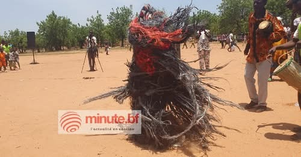
Les habitations traditionnelles se caractérisent par l'emploi exclusif de géo-matériaux locaux à l'instar du banco, de la terre crue compactée, du bois de rônier et du chaume. Ces composants régulent de manière optimale le climat intérieur face aux fortes chaleurs.
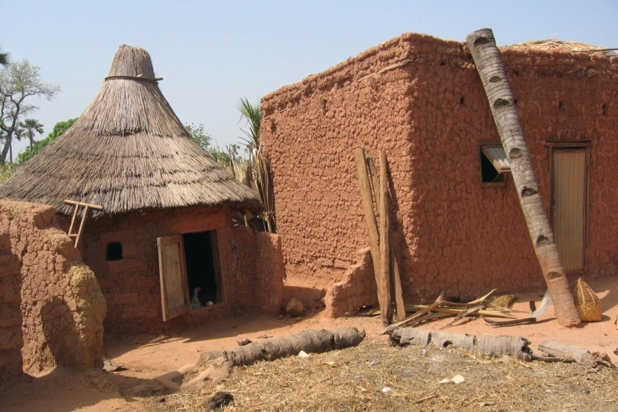
Les cascades de Banfora (ou cascades de Karfiguéla) se déploient à environ 12 km au nord-ouest de la ville. Alimentées par le fleuve Comoé, elles offrent un panorama saisissant, singulièrement d'août à septembre au pic de la saison humide.
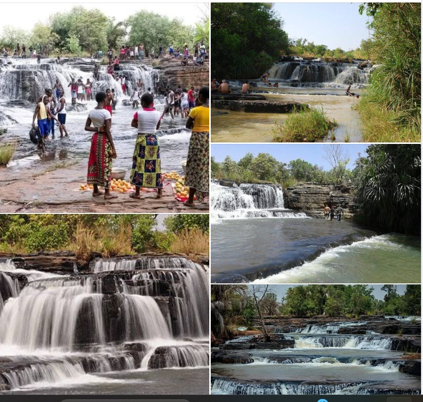
Les Dômes de Fabédougou
Situées non loin des cascades, ces formations géologiques sculptées par une érosion hydro-éolienne millénaire évoquent d'immenses coupoles rocheuses dressées au-dessus des plaines environnantes et des champs de canne à sucre.
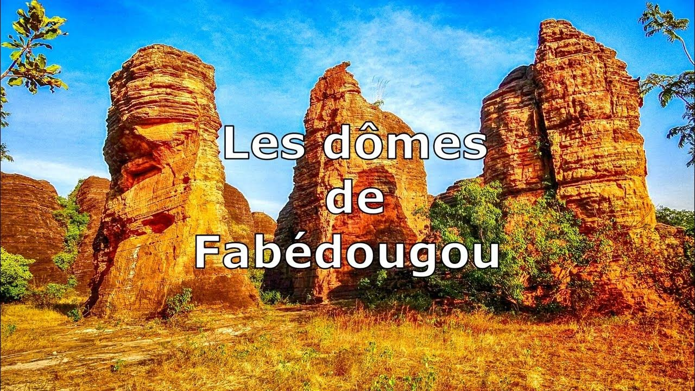
Le Lac de Tengréla et ses hippopotames paisibles
Ce miroir d’eau douce constitue un écosystème remarquable connu pour abriter des groupes de pachydermes marins vénérés par les riverains, rendant toute confrontation rarissime et préservant la sérénité du site.
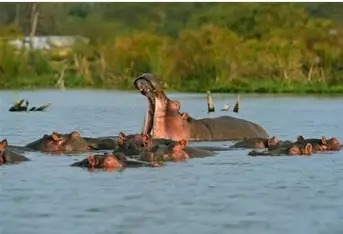
Les Pics de Sindou
Véritable rempart géologique, la chaîne de Sindou détient une puissante charge mystique et spirituelle pour les populations autochtones, servant historiquement de lieu de protection et d'initiation.
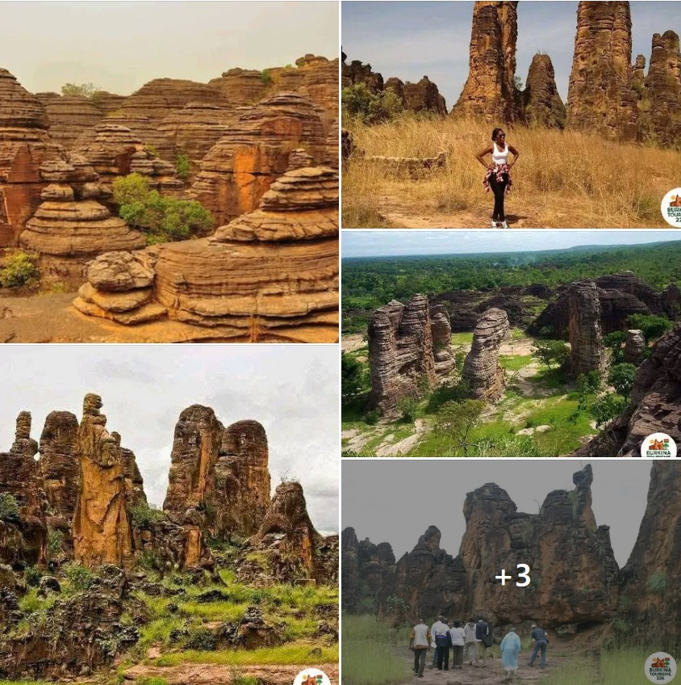
Mont Ténakourou – Le toit du Burkina Faso
Avec une altitude de 747 mètres, le mont Ténakourou est le sommet le plus élevé du pays, offrant une vue imprenable sur la ligne frontalière liant le Burkina Faso et le Mali.
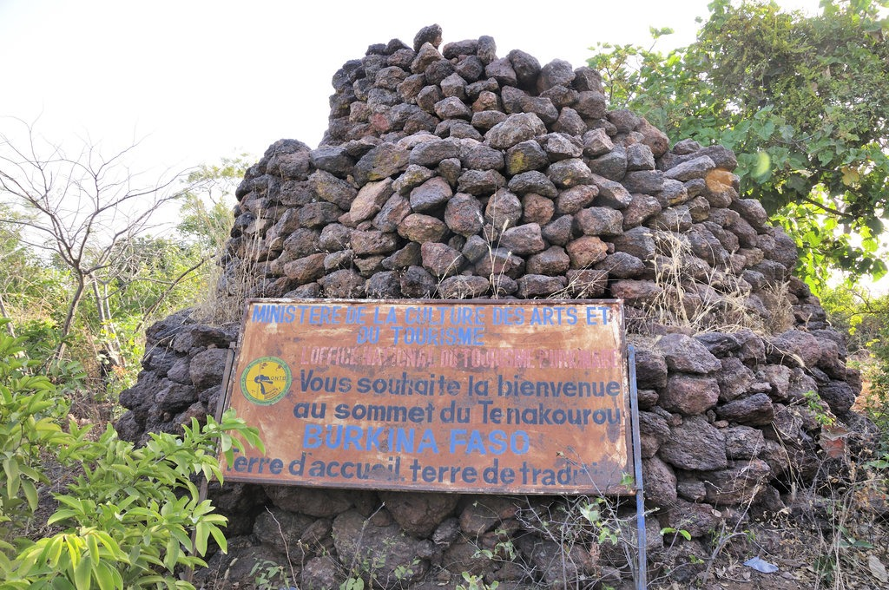
Les cavernes de Douna
Localisées à 40 km du chef-lieu régional au sein de la province de la Léraba, ces structures souterraines naturelles ont abrité la communauté Turka durant les périodes de conflits précoloniaux.
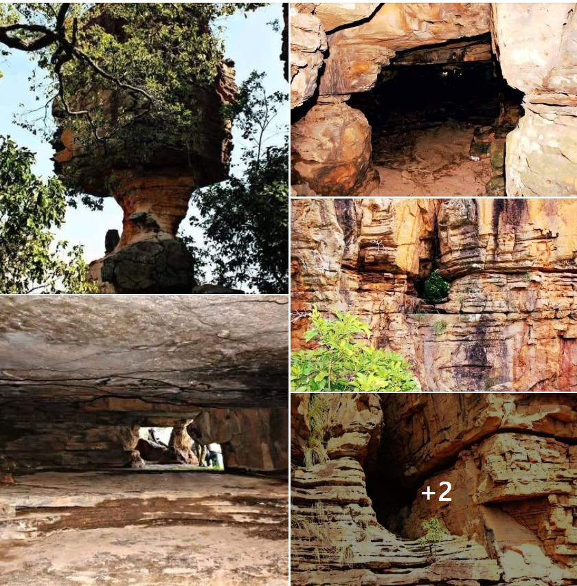
SITIENA
Ce bourg typique entouré de milliers de rôniers offre une fraîcheur constante et alimente une importante filière artisanale d'exploitation de la sève et des palmes.
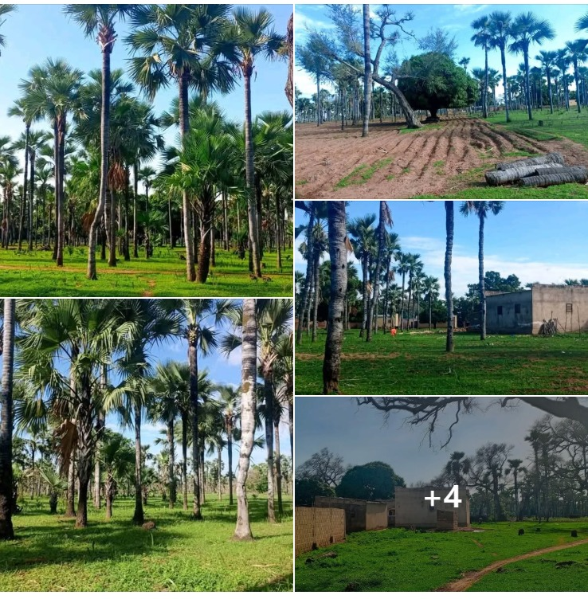
Tourisme & Culture
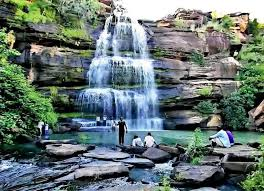
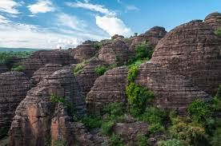
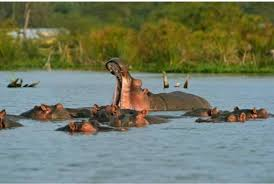
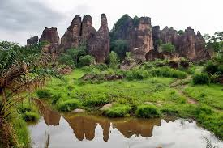
Ressources naturelles
La région de Tannounyan (ayant pour chef-lieu Banfora et englobant les provinces de la Comoé et de la Léraba) tire sa richesse de sa situation géoclimatique exceptionnelle et de son sous-sol. Les rapports officiels de la Direction régionale de l'agriculture et les publications du quotidien d'État Sidwaya mettent en avant ses abondantes ressources en eau de surface, qui alimentent des pôles de production agro-industriels clés comme la canne à sucre (via la SN-SOSUCO), ainsi que les filières stratégiques de l'anacarde, du coton et des mangues. Sur le plan minier, le Ministère de l'Énergie et des Mines encadre une activité d'extraction aurifère structurée, illustrée par la création récente de nouvelles coopératives d'artisans miniers régionales, tandis que le patrimoine géologique reconnu par le Ministère de la Culture et du Tourisme consacre la région comme le premier pôle écotouristique national grâce à ses dômes, cascades, pics et au Mont Ténakourou
Potentiel agricole 🌾
Le potentiel agricole exceptionnel de la région de Tannounyan repose sur sa pluviométrie abondante, en faisant l'un des principaux greniers du Burkina Faso. Selon les rapports de suivi de la campagne agricole humide du Ministère de l'Agriculture et du quotidien d'État Sidwaya, la région se positionne comme le leader national de la production d'anacarde (noix de cajou) et abrite l'unique pôle de culture industrielle de la canne à sucre du pays à Banfora. Dans le cadre du programme de souveraineté alimentaire (l'Offensive Agro-pastorale et Halieutique), la région se distingue par une production intensive de riz — notamment sur la plaine rizicole de Karfiguéla qui cible un rendement de 5 à 6 tonnes par hectare —, de maïs précoce, de coton (principale culture de rente), ainsi que des vergers de mangues destinés à l'exportation. De plus, les exploitants de la région s'illustrent de plus en plus dans la diversification stratégique, intégrant la production d'alevins et l'expérimentation réussie de la culture du blé en dehors des périmètres aménagés.
Potentiel éducatif 🏫
Le potentiel éducatif de la région de Tannounyan s'appuie sur une politique de modernisation voulue par les autorités, axée sur l'adéquation entre la formation et l'économie agro-industrielle locale. Les rapports de la Direction Régionale de l'Éducation Préscolaire, Primaire et Non Formelle et des services de l'enseignement secondaire mettent en avant un réseau scolaire dynamique, accueillant des milliers d'élèves aux différents examens nationaux. Les autorités ministérielles considèrent la région comme une référence majeure en matière de promotion des métiers et de formation technique, répondant directement aux besoins des unités industrielles basées à Banfora. Cet écosystème intègre également des initiatives sur l'apprentissage par les langues nationales pour renforcer le développement local. Enfin, l'enseignement supérieur y est structuré par le Centre Universitaire Polytechnique de Banfora, rattaché à l’Université Nazi Boni, qui déploie des filières professionnalisantes en Sciences Agro-pastorales, Technologie Alimentaire, Sciences Juridiques, Lettres et filières scientifiques, soutenues par le développement continu de ses infrastructures.
Potentiel commercial 🛒
Le potentiel commercial de la région de Tannounyan est solidement ancré par sa position géographique de ville-carrefour, transfrontalière de la Côte d'Ivoire et du Mali, ce qui en fait un corridor stratégique pour les échanges internationaux. Selon les données de la Direction Régionale du Ministère de l'Industrie, du Commerce et de l'Artisanat (MICA), l'activité marchande s'articule autour du Cadre de Concertation Public-Privé, mis en place pour dynamiser le civisme économique et structurer le tissu d'entreprises locales. Le dynamisme des marchés régionaux est alimenté par la commercialisation de produits de grande consommation, renforcé par le déploiement de réseaux officiels de distribution comme les boutiques nationales de vente à prix subventionné. Les services de contrôle du commerce veillent rigoureusement à l'assainissement des circuits de vente et à la lutte contre la fraude pour protéger le pouvoir d'achat des consommateurs. Ce pôle commercial est également boosté par des projets d'accélération de la transition digitale qui visent à désenclaver les zones rurales de communication, facilitant ainsi les transactions financières et la commercialisation directe des productions agricoles et artisanales vers le reste du pays
Artisanat traditionnel
Le potentiel artisanal de la région de Tannounyan s'appuie sur la richesse de son patrimoine culturel et sur des savoir-faire traditionnels dynamiques, encadrés par les structures de l'État. Selon les orientations de la Direction Régionale de la Culture, des Arts et du Tourisme, l'artisanat local se distingue par la vannerie, la poterie et le tissage traditionnel, des activités fortement stimulées par le flux d'écotouristes visitant les sites naturels de la Comoé et de la Léraba. Les artisans de la région, notamment les sculpteurs et les fabricants d'instruments de musique traditionnelle comme le balafon, bénéficient d'une vitrine nationale lors de grands événements culturels, renforçant le rayonnement de l'identité culturelle locale. De plus, les initiatives du Ministère du Commerce et de l'Artisanat visent à structurer le secteur à travers la formation continue et l'octroi de cartes professionnelles, permettant de formaliser les ateliers et de faciliter l'accès des créateurs aux foires d'exposition. Cet écosystème est complété par l'artisanat de transformation agroalimentaire, où les groupements féminins se spécialisent dans la valorisation des produits locaux, tels que le séchage de la mangue et la transformation de la noix de cajou.
Carte de situation
Provinces